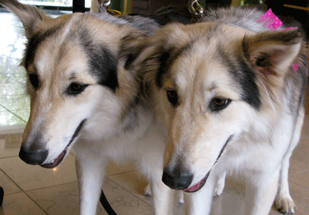

O QUE É
A clonagem de seres vivos é uma técnica que permite criar uma cópia geneticamente idêntica de um organismo existente. Essa técnica envolve a transferência do núcleo de uma célula somática (qualquer célula do corpo que não seja um gameta) de um organismo doador para um ovócito não fertilizado, o qual teve seu próprio núcleo removido. Esse processo é chamado de transferência nuclear somática (TNS) e resulta em um embrião clonado que é implantado em um útero para desenvolvimento. A ética na biotecnologia é um assunto complexo que envolve questões éticas e morais relacionadas ao uso de tecnologias biológicas e genéticas. No caso da clonagem, existem várias questões éticas que são debatidas, como por exemplo:
- A clonagem humana é ética? Existe a possibilidade de clonar seres humanos para fins reprodutivos ou de criação de "cópias" de indivíduos importantes ou famosos?
- A clonagem de animais para fins alimentares é ética? Existem preocupações com o bem-estar animal e com a segurança alimentar.
- A clonagem de animais para fins de pesquisa é ética? Existem preocupações com o bem-estar animal e com a validade científica dos resultados obtidos a partir de animais clonados.
Essas são apenas algumas das questões éticas que estão relacionadas à clonagem e à biotecnologia em geral. O debate ético em torno dessas questões continua a evoluir à medida que a tecnologia avança.
SUA IMPORTÂNCIA
A clonagem de seres vivos e a biotecnologia em geral têm grande importância em diversas áreas, incluindo a medicina, a agricultura e a pesquisa científica. Algumas das possíveis vantagens e aplicações da clonagem incluem: